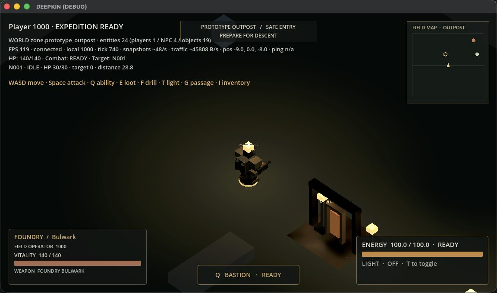

00Asentamiento
The Outpost
Donde llega todo operador. Un pequeño asentamiento minero fortificado alrededor de un viejo pozo de excavación.
Desde el camino de llegada ya ves adónde vas: el pozo, rodeado de luces de trabajo, y la grúa del elevador justo enfrente. Los trabajadores perforan la roca, las cápsulas de carga van y vienen entre el patio y el borde, y el viejo Brannock, minero del pozo, tiene tres cosas para decirte: «¿Nuevo por acá?» · «Agarrá un taladro. Agarrá un arma.» · «Todo lo que necesitamos viene de abajo.»
- Cajones para recién llegados con tu equipo inicial
- Elevador del pozo hacia The Threshold (G)
- Dos puntos de perforación para probar el taladro
- Estación de control, sala de energía, patio de carga